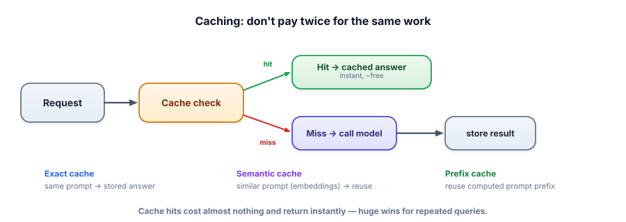

Caching
Many apps get asked the same things again and again.
A cache is a store of answers you already paid for, kept so a repeat costs almost nothing.
An exact cache matches identical questions; a semantic cache matches questions with the same meaning.
Prompt caching is different: the provider reuses its work on a long, fixed start of your prompt, so each call is cheaper.
The risk is serving a stored answer to someone it doesn't fit.
A school library has three tricks. If someone asks for the exact same book again, the librarian hands over the copy already on the desk (exact-match cache). If someone asks for 'that book about the boy wizard', she guesses it is the same as yesterday's request and hands that one over (semantic cache, fast but sometimes wrong). And if every student's homework starts with the same 50-page reading pack, she photocopies it once and keeps it ready instead of re-reading it for each student (prompt caching: the work on the shared start is reused, but each student still gets their own answer).
| In the picture | In the real system |
|---|---|
| The same book already on the desk | Exact-match cache: identical text, stored answer, no model call |
| Guessing 'the boy wizard book' means yesterday's book | Semantic cache: embedding similarity above a threshold, such as 0.92 |
| The reading pack photocopied once for every student | Prompt caching: a byte-identical prefix read from cache at $0.10 per million on Sonnet 5.5, instead of $2 |
| Each student still writing their own homework | With prompt caching the model still writes a fresh answer every time |
Where the picture breaks. The librarian can see the books, while a semantic cache only sees how similar two questions look, not whether the answer really fits. The photocopy is not kept forever either: a prompt cache only matches the exact start of the prompt, costs 1.25 times the normal price to write, and is thrown away after 5 minutes without a read (or 1 hour if you pay for that).
Going deeper
The fastest, cheapest LLM call is the one you never make. Many production workloads ask the same or similar things over and over — and caching turns those repeats into instant, near-free responses. It’s often the single biggest cost win available.
Why caching is so effective here
LLM calls are unusually expensive (money and latency) and queries are unusually repetitive — the same FAQ, the same document summarized, the same popular question asked a thousand times. Caching stores the result of a call so the next identical (or similar) request returns the stored answer instantly, at no model cost. Because LLM calls cost so much more than a cache lookup, even a modest hit rate pays off enormously.

An exact cache returns a stored answer when the request is identical (same prompt → same answer). A semantic cache matches similar requests using embeddings (Track 1.3): if a new query is close enough to a cached one, reuse the answer. Prompt/prefix caching (a provider/runtime feature) reuses the model’s computation for a shared prompt prefix (like a long fixed system prompt) across requests, cutting prefill cost. The hit rate is the fraction of requests served from cache.
An exact cache is a dictionary; a semantic cache adds an embedding similarity check. Both are a few lines.
import numpy as np
from sentence_transformers import SentenceTransformer
embed = SentenceTransformer("all-MiniLM-L6-v2")
exact = {} # exact cache: prompt -> answer
sem_q, sem_v, sem_a = [], None, [] # semantic cache: queries, vectors, answers
def cached_answer(query, threshold=0.92):
if query in exact: # 1) exact hit → instant, free
return exact[query]
if sem_v is not None: # 2) semantic hit → similar question already answered
qv = embed.encode([query], normalize_embeddings=True)[0]
sims = sem_v @ qv
if sims.max() >= threshold:
return sem_a[int(sims.argmax())]
answer = call_model(query) # 3) miss → pay for it once, then store
exact[query] = answer
store_semantic(query, answer) # append to sem_q/sem_v/sem_a
return answerThe semantic threshold is the key knob: too low and you return a cached answer to a question that’s actually different (a wrong answer); too high and you miss real repeats. Tune it against your data (Track 6).
Assumptions (ours): 200,000 requests a day on claude-sonnet-5-5; each request has a fixed 6,000-token prefix (system prompt + tool definitions + policy summary), 1,500 variable tokens (question + retrieved chunks) and 250 output tokens. Prices from Anthropic prompt caching docs: base input $2/M, 5-minute cache write $2.50/M, cache read $0.10/M (0.05x on Sonnet 5.5), output $10/M.
- No caching. 7,500 x $2/M + 250 x $10/M = $0.015 + $0.0025 = $0.0175 a request, so $3,500 a day.
- Provider prompt caching (the provider reuses its computation for an identical prefix; you still get a fresh answer). Traffic is continuous, so the 5-minute cache stays warm; even one rewrite every 5 minutes is 288 writes x 6,000 x $2.50/M = $4.32 a day. Per request: 6,000 x $0.10/M + 1,500 x $2/M + $0.0025 = $0.0006 + $0.003 + $0.0025 = $0.0061, so about $1,224 a day (65% saved). Condition: the prefix must be byte-identical, so put the date and user name after the cache breakpoint, and the prefix must meet the model's minimum (512 tokens on Sonnet 5.5).
- Exact-match response cache (your own store; a hit skips the model entirely). Assume 15% of questions are identical after normalizing case and whitespace. 170,000 calls remain: 170,000 x $0.0061 = $1,037 a day, and hits return in milliseconds.
- Semantic cache (embedding similarity above a threshold, say 0.92). Assume it adds another 10% of hits: 150,000 calls, $915 a day. The risk: a wrong hit serves an answer to a different question. HR answers differ by country, so the cache key must include country, policy version and prompt version.
- Read the stack. Response caches decide whether you call the model; prompt caching makes the calls you still make cheaper and faster to first token. They stack. Total saving here: $3,500 to $915, about 74%, with the semantic layer contributing the smallest and riskiest slice.
Cache the wrong things and you serve stale or wrong answers. Don’t cache personalized responses across users (one user could get another’s answer), time-sensitive answers (today’s price), or non-deterministic creative tasks where variety is the point. And set the semantic threshold carefully — a too-loose semantic cache confidently returns a near-miss answer. Cache the stable, shared, repeatable stuff; invalidate when the underlying data changes.
What a cache is worth
Drag the hit rate. Cost and latency both fall, and neither requires a better model, a bigger machine, or a single change to your prompt.
- The cheapest call is one you skip — caching turns repeats into instant, near-free responses.
- Exact cache (identical prompt), semantic cache (similar via embeddings), prefix cache (shared prompt prefix).
- Because LLM calls cost far more than a lookup, even a modest hit rate is a big win.
- The semantic threshold is a correctness knob — too loose serves wrong answers.
- Don’t cache personalized, time-sensitive, or intentionally-varied outputs; invalidate when data changes.
You add a semantic cache with a low similarity threshold to maximize hit rate. Users start getting answers that don’t quite match their questions. What happened?
What's the cheapest possible LLM call?
Which statement correctly separates provider prompt caching from a response cache?
Your Claude prompt-cache hit rate is near zero even though every request starts with the same 5,000-token system prompt. What is the most likely bug?
1. Classify as cacheable or not: (a) “What’s your return policy?”, (b) “Summarize my last order”, (c) “Write a fresh joke”, (d) “What’s the weather now?”.
2. Why does prefix caching specifically help RAG and agents?
3. Your cache hit rate is 60% but the answers are based on docs that change weekly. What must you add?
▸ Show solutions & reasoning
1. (a) cacheable — a stable, shared answer everyone gets. (b) not — personalized; caching across users could leak one user’s data to another. (c) not — variety is the point; a cached joke defeats it. (d) not — time-sensitive; a cached answer goes stale immediately. Cache the stable and shared; never the personal, time-sensitive, or deliberately-varied.
2. RAG and agents tend to send a large, fixed prefix on every call — a long system prompt, instructions, tool definitions — followed by the variable part (the query/step). Prefix caching reuses the model’s computation for that shared prefix instead of re-processing it each time, cutting prefill cost and TTFT. Since these systems make many calls with the same heavy prefix, the savings compound.
3. Cache invalidation tied to the data: when the weekly docs update (re-index), you must expire the affected cached answers (or use a time-to-live so entries auto-expire within the update window). Otherwise your 60% hit rate is 60% potentially-stale answers. A cache without an invalidation strategy trades cost for correctness — define how and when entries die.
In production, caching graduates from an in-memory dictionary to a deliberate layer with policies. You choose a store (an in-process dict for a single server, or Redis/a database for a fleet so all instances share hits), a key (the exact prompt, or a normalized form, plus any relevant context like user-scope or model version — so you don’t mix incompatible results), an invalidation strategy (time-to-live, or event-based eviction when source data changes), and for semantic caches a carefully-tuned threshold validated on real query pairs. Each is a small decision with real correctness consequences, which is why caching is a place senior engineers slow down even though the happy path looks trivial.
The strategic point: caching is frequently the largest single cost lever, precisely because real traffic is far more repetitive than people expect — a long tail of unique queries sits on top of a fat head of common ones. Measure your actual query distribution (Track 6 traces) and you’ll often find a handful of questions account for a big share of volume; caching those alone can slash cost.
Combine exact caching for identical repeats, prefix caching for your fixed system prompt/tools, and a conservative semantic cache for paraphrases, and you can cut both spend and latency substantially with almost no quality risk — provided you respect the boundaries (no personalized/time-sensitive caching, sane invalidation, tuned thresholds). It’s the rare optimization that makes things both cheaper and faster at once.
labs/08_llmops.pyFree and offline once set up: Ollama with qwen2.5:7b, plus the packages in labs/README.md. From the course folder:
python labs/08_llmops.pyWhat to look for: Section 2 runs exact-match and semantic caching over 7 requests and prints the cache result and latency per request: exact hits take about 0.1 ms against about 6 s for a model call. Section 3 prints the paraphrase similarity (0.657) next to a different-intent question (0.523) and the semantic hit count at threshold 0.90 (0 on our run). Lower the threshold and check each new hit is the same intent. Provider prompt caching is not shown locally; price it with the Anthropic table instead.
Small samples: these labs use 5 to 20 cases so they run in minutes on a laptop. Where they report a rate, they print n and a 95% Wilson interval. Read them as a demonstration of the mechanism, not as a measured rate for your system; for that you need hundreds of cases and several seeds.
▸ Recorded output (our run, 2026-11-03, qwen2.5:7b on a laptop GPU)
semantic similarity to the cached 'track my order': paraphrase=0.657 different intent (cancel)=0.523
semantic hits at threshold 0.9: 0
Look: a threshold low enough to catch the paraphrase would sit close to the wrong-intent score.
Serving 'how to track' to someone who asked 'how to cancel' is worse than a cache miss. Tune the
threshold on labelled pairs, scope caches per intent/tenant, and log every semantic hit for review.
traces written to traces.jsonl; first span:
{"trace_id": "54d669838c1f47758c9099aba0110b3f", "name": "chat qwen2.5:7b", "gen_ai.operation.name": "chat", "gen_ai.provider.name": "ollama", "gen_ai.request.model": "qwen2.5:7b", "gen_ai.prompt.name": "support_answer", "gen_ai.prompt.version": 2, "prompt.hash": "5ab3d11ffb3b", "user.id": "u-123",
4) Prompt version rollout: v1 vs v2 on the same question, both traced
v1 hash=47ed77f326d6 -> "Yes, you can return innerwear as long as it meets your retailer's return policy conditions, such as being unus"
v2 hash=5ab3d11ffb3b -> 'Please contact support for specific return policies on innerwear.'
Check the facts too: store policy (labs/data/kb.json, ret-01) says innerwear cannot be returned. Neither
prompt has retrieval, so any 'yes' is a hallucination; the version that defers to support is the safer one.
Look: the trace links every answer to an exact prompt hash and model, so a bad answer is debuggable,
and a rollout is a registry change you can roll back, not a code edit buried in a deploy.Your numbers will differ a little run to run. Full log: labs/outputs. Source: labs/08_llmops.py.
Warm-up. On claude-opus-5-5 (base input $4/M, 5-minute cache write $5/M, cache read $0.20/M), a 10,000-token prefix is written once and then read 99 times. Compare the prefix cost with and without caching.
▸ Solution
Without caching: 100 x 10,000 x $4/M = $4.00. With caching: one write 10,000 x $5/M = $0.05 plus 99 reads x 10,000 x $0.20/M = $0.198, total $0.248. That is about 94% less on the prefix. The write costs 1.25x base, so caching only loses money if the prefix is almost never read again within the TTL.
Transfer. Design the cache key for an exact-match response cache in a multi-tenant SaaS help bot whose answers depend on the tenant's plan and on a prompt template that you update weekly.
▸ Solution
Key = hash(tenant_id or plan tier, model ID, prompt template version, retrieval index version, normalized question). Tenant or plan stops one customer's answer leaking to another and stops a Pro answer being served to a Free user. Model ID and prompt version mean a prompt or model change naturally starts a fresh cache instead of serving answers produced by the old version. Index version invalidates when documents change. Add a TTL as a safety net. The why: every input that can change the right answer must be in the key, or the cache will eventually serve a wrong one.
Stretch. You want to tune a semantic cache threshold. Describe the experiment and the decision rule, given that a wrong cached answer costs 20x more (in support tickets) than a cache miss costs in tokens.
▸ Solution
Collect a few thousand real query pairs from logs where the nearest cached neighbour exists, and label each pair 'same answer is correct' or not (humans or a careful judge, spot-checked). For each threshold from 0.80 to 0.98, compute hit rate and wrong-hit rate. Expected cost per query = miss_rate x c_miss + wrong_hit_rate x 20 x c_miss. Pick the threshold that minimises it, then add a margin because labels are noisy. With a 20x penalty you will usually land high (often 0.93 or more on MiniLM-style embeddings, but measure), and you may restrict the semantic layer to FAQ-type intents only.
Junior What kinds of LLM responses should never be cached across users?
▸ Model answer
Anything personalised, anything time-sensitive, and anything where variety is the point. Personalised answers, like a summary of my orders, could leak one user's data to another. Time-sensitive answers, like stock levels or today's schedule, go stale. Creative tasks lose their value if everyone gets the same output. I also avoid caching answers that depend on permissions unless the permission scope is part of the cache key. Stable, shared facts like a return policy are the good candidates.
Mid Explain how you would combine prompt caching, exact caching and semantic caching in one RAG service.
▸ Model answer
Order matters. First an exact-match cache keyed on the normalized question plus tenant, model and prompt version; a hit returns in milliseconds and costs nothing. Next, for FAQ-type intents only, a semantic cache with a conservative threshold tuned on labelled pairs. On a miss I call the model, and the request is laid out so the system prompt and tool definitions form a stable prefix that the provider caches; retrieved chunks and the question go after the breakpoint. I log cache_read and cache_creation token counts and the response-cache hit rates, and invalidate response caches when the index or prompt changes.
Senior Prompt caching cut your bill 60% in staging but only 10% in production. What could explain it?
▸ Model answer
The cache needs repeated identical prefixes within the TTL. In production the prefix might vary: per-tenant system prompts, feature flags or A/B variants injected early, tool lists that change order, or a timestamp at the top. Traffic may also be spread across many prefixes and regions, so each one goes cold between hits at a 5-minute TTL. I would compare cache_read_input_tokens against total input per prompt variant, normalise and sort anything that varies, move volatile parts after the breakpoint, consider the 1-hour TTL for sparse but steady traffic, and consolidate prompt variants where the A/B tests are finished.
Caching avoids calls; the next lever makes the calls you do make cheaper by not over-using your most expensive model. Next: model routing.
In one line: Don't pay twice for the same work: store answers, and let the provider reuse the shared start of your prompt.